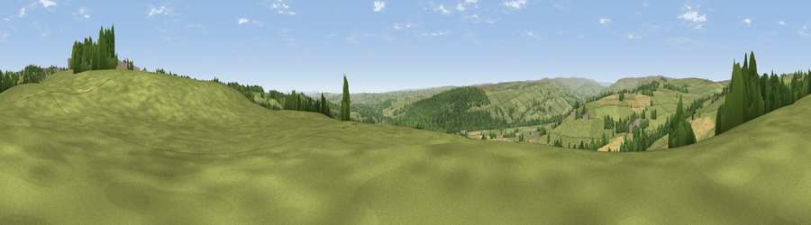

Viewpoint near Tow Law
#13092 in England · top 27% of its area beats it · near Tow LawWhere it is
The exact computed spot (NZ 11225 37775). Click the marker for map links.
The view, rendered

A 360° render of this exact spot computed from the terrain model, tree cover and land cover — summer colours, afternoon light, calibrated against photographs of famous viewpoints. Real trees, hedges and buildings will differ in detail.
The panorama
Grey silhouette: terrain skyline in each direction (720 bearings, Earth curvature and refraction included). Dashed green: skyline with trees (+15 m) and buildings (+8 m) as obstacles. Blue strip: how far the ground is visible on each bearing.
Where the view opens
Wedge length = distance to the farthest visible ground on that bearing (vegetation-aware). Rings at 10, 25 and 50 km.
What fills the view
70% grassland · 22% woodland · 8% cropland
Angular shares of the visible panorama (visual magnitude), not map area. Landscape diversity 0.35 (0–1 Shannon).
Key numbers
More beautiful places nearby
The staircase of upgrades: each row has a higher view potential than everything closer. Driving times are estimates from straight-line distance, calibrated against real road routing — check an actual route before setting out.
| Place | Direction | Drive | Score |
|---|---|---|---|
| Viewpoint near Tow Law | ENE · 2 km | ~6 min | 60.1 |
| Viewpoint near Fir Tree | SE · 4 km | ~8 min | 64.3 |
| Billy Hill | E · 4 km | ~10 min | 66.4 |
| Viewpoint near Billy Row | ESE · 6 km | ~13 min | 70.3 |
| Collier Law | WNW · 10 km | ~20 min | 71.7 |
| Viewpoint near Edmondsley | NE · 15 km | ~27 min | 72.6 |
| Pontop Pike | NNE · 16 km | ~28 min | 77.8 |
| Little Dun Fell | W · 41 km | ~60 min | 78.4 |
54.73483, -1.82720 · source: screening · position refined by local search. Computed location — check access rights before visiting.